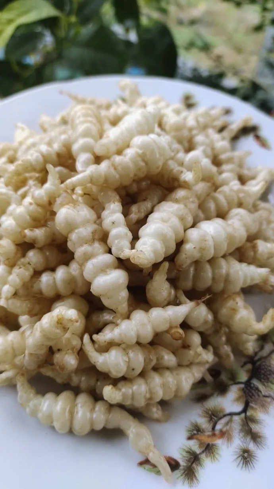
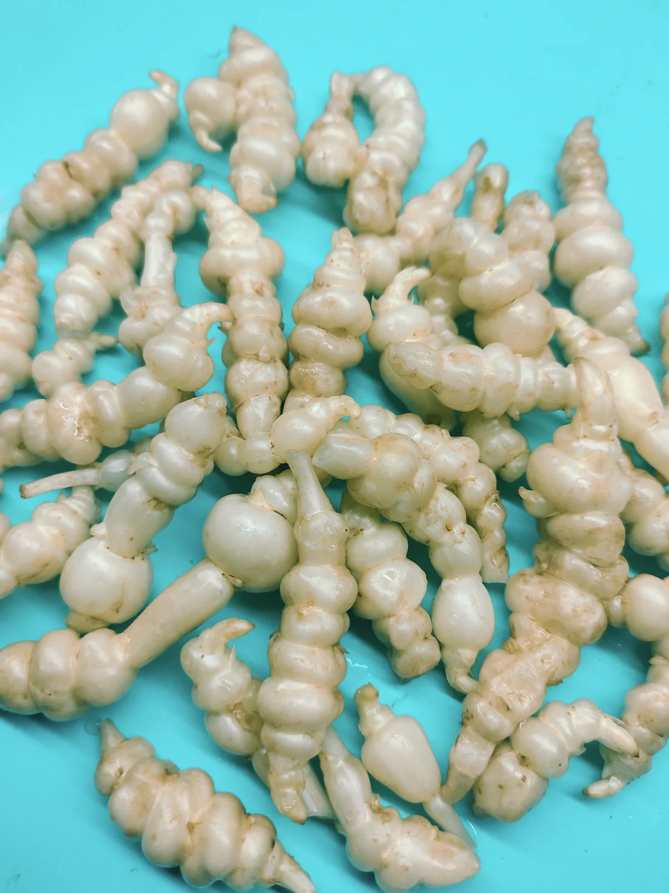
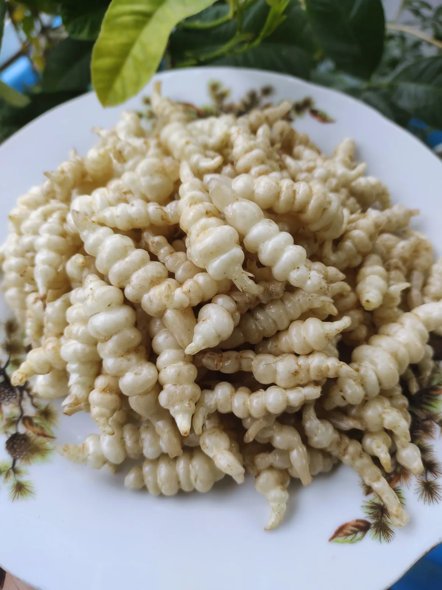
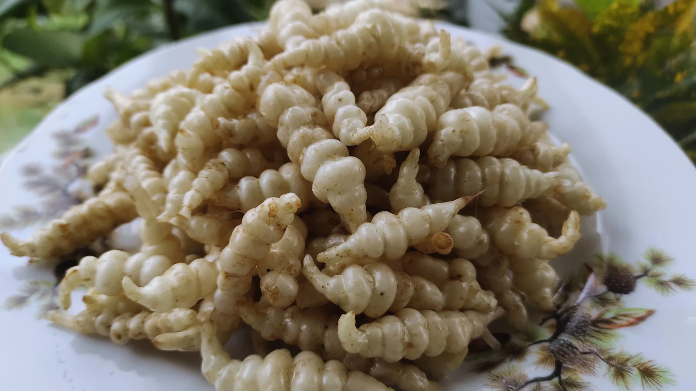
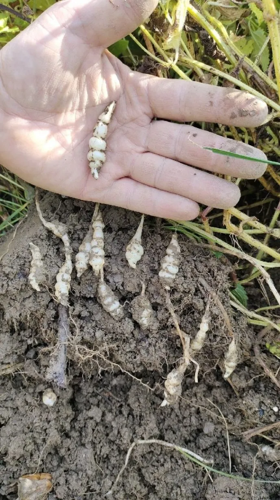

Китайский артишок с деликатесными клубеньками. В сыром виде напоминает орехи, в варёном — нежную картошечку и артишок. Неприхотлив, зимует в грунте.
Преимущества культуры для вашего участка.
Стахис в разные сезоны: от всходов до сбора урожая.





Всё, что нужно знать о культуре: от посадки до хранения.
Стахис — культура неприхотливая. Весь уход сводится к поливам и прополкам. В сухую и жаркую погоду достаточно полива 1 раз в неделю. Растение практически не поражается вредителями и болезнями.
Одна из поздних культур — сбор начинают после обмерзания ботвы. Клубни мелкие, поэтому выкопать и отмыть их — самая трудоёмкая часть. Но то, что растёт без проблем, зимует на месте и никто его не ест, ставит стахис в ряды культур, которые НАДО выращивать.
Многолетник. Посадив один раз, вы будете собирать урожай каждый год. Растение зимует в грунте без укрытия.
Нет, он отлично зимует в земле. Выкапывают только часть клубней для еды, остальные оставляют для следующего сезона.
Клубни очень мелкие, почистить их невозможно. Их просто тщательно промывают щёткой и готовят целиком.
Посадочный материал из коллекции Batatchudo и рекомендации по выращиванию.